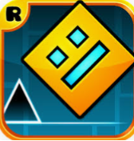

.PNG)
level devil
Level Devil is a platformer with a mean twist. The goal is simple; get to the door at the end of the level to win,
but it's not as easy as it may seem... Holes can show up out of nowhere, spikes can move unexpectedly and ceilings can fall down on you as you make your way through the many different levels.
One wrong step and it's game over. You'll have to keep your wits about you, expect the unexpected and most importantly: don't get angry. Can you make it through these hellish levels and beat Level Devil?
CLICK HERE
.png)
subway surfers
Subway Surfers is a classic endless runner game. You play as Jake, who surfs the subways and tries to escape from the grumpy Inspector and his dog.
You'll need to dodge trains, trams, obstacles, and more to go as far as you can in this endless running game. Collect coins to unlock power-ups and special gear to help you go further every time in Subway Surfers.
Furthermore, coins can be used to unlock different characters and boards. With your keys you can customize the characters and upgrade your hoverboards with special powers. Don't forget to complete the awards,
since they give you keys. In 'MyTour' you can collect rewards from completing daily Word Hunts. You can also find missions there. Subway Surfers was created by Sybo in 2012. And till this day it is one of the most popular games online!
CLICK HERE TO PLAY

minecraft classic
A classic free remake minecraft and you can enjoy with your freinds
CLICK HERE
Geometry Dash
Geometry Dash is a side-scrolling platformer mobile game created by Swedish game developer Robert Topala.
It was released on 13 August 2013 for iOS and Android, with versions for Windows and macOS following on 22 December 2014.
The player controls an icon to navigate music-based levels, avoiding obstacles like spikes

CLICK HERE
Dinosuar platformer
CLICK HERE
2d minecraf
CLICK HERE
slither.io
CLICK HERE
3D ONLY UP！
CLICK HERE